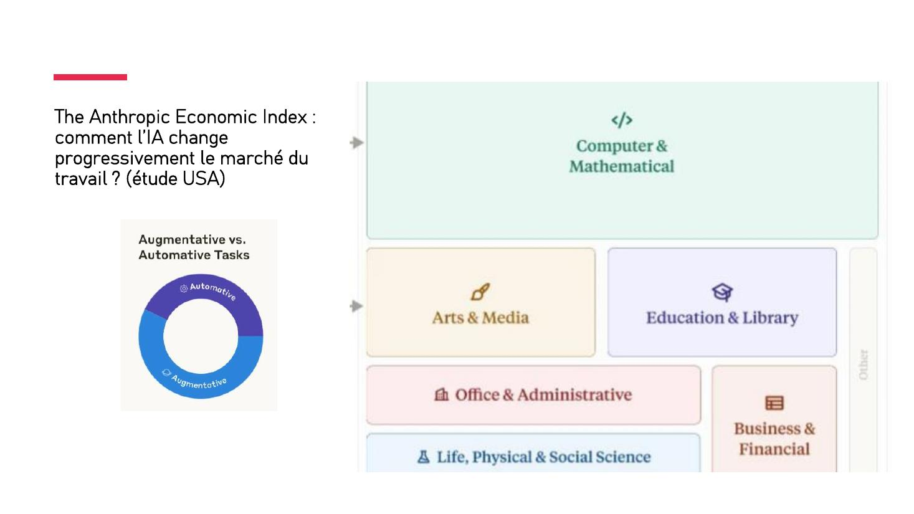

DIAPOSITIVES 49 à 52
Là où la question cesse d’être spéculative.
| Secteur | Ce que l’IA y fait |
|---|---|
| La santé | Médecine prédictive, aide au diagnostic, traitements personnalisés, chirurgie assistée. |
| L’automobile | Conduite autonome et maintenance prédictive ; forte croissance du marché de la voiture intelligente. |
| La finance et la banque | Conseil financier, détection de fraudes, assistance client par agents conversationnels. |
| L’industrie | Maintenance prédictive, optimisation des chaînes de production. |
| Le commerce de détail | Personnalisation poussée de l’expérience client, en magasin comme en ligne. |
| La défense et l’aéronautique | Cybersécurité et technologies militaires. |
| L’agriculture | Gestion des cultures, prévision des rendements, optimisation des ressources. |
| Le tourisme | Assistants virtuels, personnalisation des offres. |
| L’éducation | Apprentissage personnalisé, automatisation de la correction d’évaluations. |
| Les médias et divertissements | Création de contenu, personnalisation, monétisation. |
Le tableau projeté, repris intégralement. Il mêle des mesures et des perceptions — l’exposé les range d’ailleurs sous deux colonnes distinctes.
| No | Statistique | Impact sur l’emploi |
|---|---|---|
| 1 | 14 % des travailleurs affirment avoir déjà perdu leur emploi à cause des « robots ». | Déplacement d’emplois en cours |
| 2 | En mai 2023, 3 900 pertes d’emplois aux États-Unis étaient directement liées à l’IA. | Impact immédiat sur l’emploi en IA |
| 3 | British Telecom vise à remplacer 10 000 employés par l’IA d’ici sept ans. | Plan d’action de l’entreprise pour l’IA |
| 4 | Les débuts de l’intelligence artificielle et de l’automatisation ont déjà entraîné une baisse des salaires allant jusqu’à 70 % depuis 1980. | Impact historique sur les salaires |
| 5 | Ce sont désormais les travailleurs instruits et les cols blancs qui seront touchés par l’automatisation. | L’évolution des emplois de cols blancs |
| 6 | 81 % des employés de bureau pensent que l’IA améliore leurs performances au travail. | L’influence positive de l’IA sur le lieu de travail |
| 7 | 30 % des travailleurs craignent que leur emploi soit bientôt remplacé par la technologie. | Préoccupations concernant le déplacement des travailleurs |
| 8 | Plus de la moitié des jeunes de 18 à 24 ans craignent que l’IA ne prenne des emplois. | Inquiétudes générationnelles liées à l’emploi |
| 9 | 81,6 % des spécialistes du marketing numérique pensent que les rédacteurs de contenu perdront leur emploi à cause de l’IA. | Préoccupations du secteur de la création de contenu |
| 10 | Les PDG d’entreprises d’IA comme OpenAI ont signé une lettre ouverte mettant en garde contre le risque d’extinction de l’IA. | L’impact sociétal plus large de l’IA |
La ligne 6 mérite d’être lue à côté de la 7 : 81 % trouvent que l’IA améliore leur travail, 30 % craignent qu’elle le supprime. Ce ne sont pas des chiffres contradictoires — ce sont les deux moitiés de la même situation.

L’intérêt de l’index est de porter sur des usages observés plutôt que sur des déclarations d’intention. Les catégories professionnelles relevées : informatique et mathématiques (largement en tête), arts et médias, éducation et bibliothèques, bureau et administration, sciences de la vie, physiques et sociales, gestion et finance.
La distinction augmentatif / automatique est celle qui manque au tableau précédent : elle sépare ce qui déplace le travail de ce qui le supprime, là où les statistiques d’opinion mélangent les deux. Étude limitée aux États-Unis.
Global Risks Report 2025 du Forum économique mondial : les dix risques classés par sévérité estimée sur une période de dix ans.
| Rang | Risque | Catégorie |
|---|---|---|
| 1er | Événements météorologiques extrêmes | Environnemental |
| 2e | Perte de biodiversité et effondrement des écosystèmes | Environnemental |
| 3e | Changement critique des systèmes terrestres | Environnemental |
| 4e | Pénurie de ressources naturelles | Environnemental |
| 5e | Mésinformation et désinformation | Technologique |
| 6e | Conséquences néfastes des technologies d’IA | Technologique |
| 7e | Inégalités | Sociétal |
| 8e | Polarisation sociétale | Sociétal |
| 9e | Cyberespionnage et cyberguerre | Technologique |
| 10e | Pollution | Environnemental |
C’est la pièce qui justifie l’affirmation posée dès la fiche 2 : les risques de l’IA sont réels mais viennent au sixième rang, derrière quatre risques environnementaux. Et la désinformation, qui les précède d’un rang, est elle aussi une conséquence de l’IA — de sorte que le classement dit à la fois que l’IA n’est pas le premier péril, et que son ombre couvre deux des dix lignes.